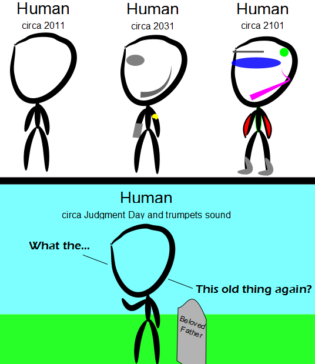

Comic JK 744
When I Feel Like It
⇤
<
?
>
⇥

⇤
<
?
>
⇥
Forum
.
RSS
.
Digg
.
Facebook
.
Reddit
.
Twitter
.
Stumbleupon
Enter your thoughts on number 744 here. Please, no spamming, trolling, phreaking, or cortical implants. Your mother likes my implants. So, basically, in 2101, we look like what everyone in 2015 from Back to the Future 2 looks like? >No, we will be colorful stick figures >>From the 80s. >>>You fools! In AD 2101, war was beginning! >>>>What you say!! >>>>>What happen? Somebody set us up the bomb! We get signal! What!? Main screen turn on. >>>>>>It's you!! >>>>>>>How are you gentlemen! >>>>>>>>All your base are belong to us. >>>>>>>>>What you say!! >>>>>>>>>>You have no chance to survive make your time. Ha Ha Ha Ha... >>>>>>>>>>>Captain... >>>>>>>>>>>>Take off every 'ZIG'! You know what you doing. >>>>>>>>>>>>>For great justice... >>>>>>>>>>>>>>Congratulation! All your base are now return to you. It says we get new bodies... It doesn't tell us anything about the capabilities of those bodies, other than they will be more useful than the ones we currently have. >down with the censor! >>actually, not even that. It only states something about the look of our new bodies, nothing about functionality >>>I'd call practical immortality etc as useful. Who else thinks it is unfair that only God can violate (ooh, God violates) the fundamental laws of physics like entropy, cons.of mass, cons. of energy, etc. and have information travel faster than the speed of light? >If god is not needed for the model to work, then clearly god is not necessary. >> you could argue the other way too: If the model is not needed for god to work, then clearly the model is not necessary So in 2101 I'll have one big blue eye, linear eyebrow (one), a green brain tumour, grey boots and a jacket with red sleeves. Bring it on. Or have I missed something? >You mean being a cyborg, for example? >>No, I don't think that's it. >Yeah, you missed the hot pink headset microphone you’ll be wearing. Laser vision is over-rated. >I agree. It makes it so hard to see. >> But your vision does stay clear, at whatever range necessary. Not to mention the precision with wich you can see stuff. >>>But you'd only be able to see distinct points, it would be like a badly pixelated image. No spread. >>>Actually, you'd see points the same size of your pupils. (or whatever you use to capture the reflection in the future). Also, what makes you think laser-vision won't be accompanied by more diffuse types of vision for near-field detection? vision in one dimension? >1-D TVS! >>Actually it's in 0 dimensions. >the worst thing about Laser vision was the inability to record... >>But pretty useful for reading in bed. Where's my fucking hoverboots? I was promised I'd have hoverboots by now. Bastards...